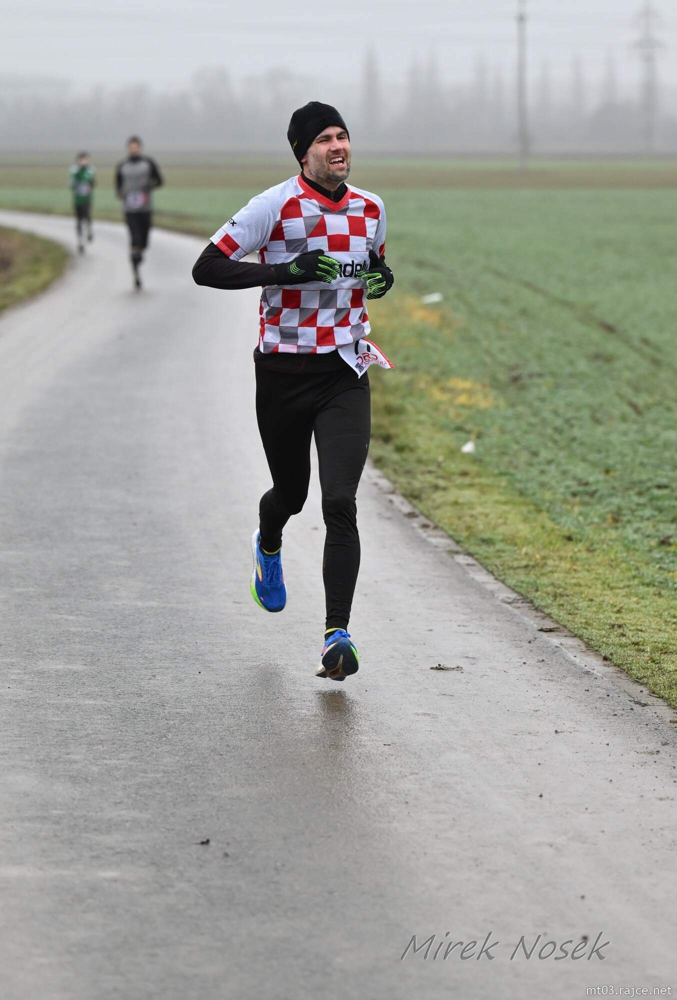
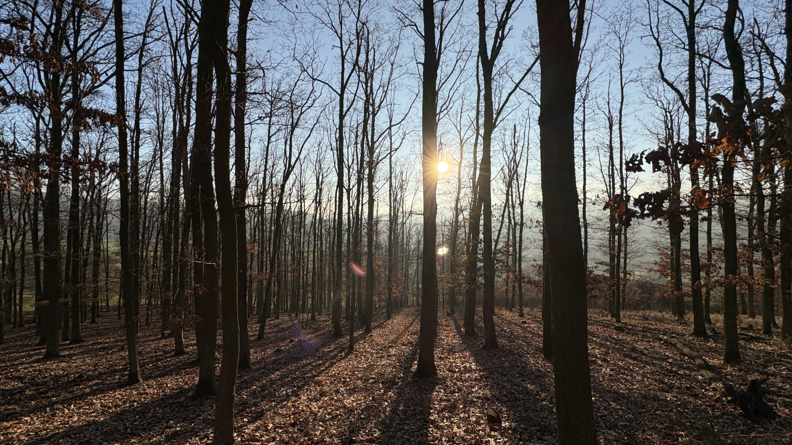
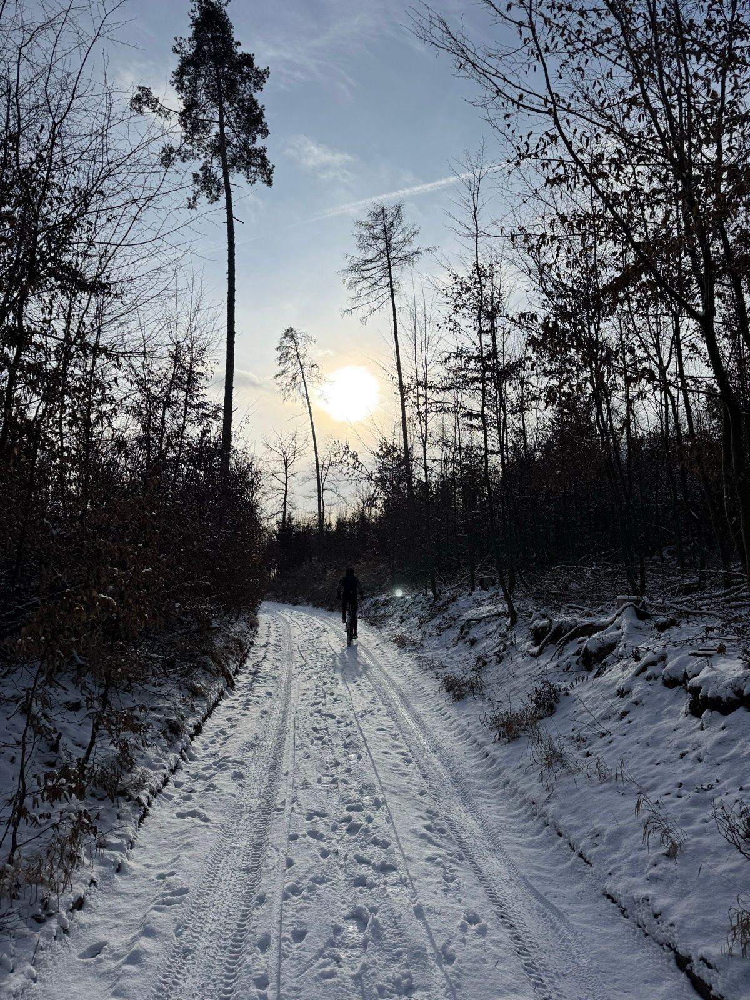
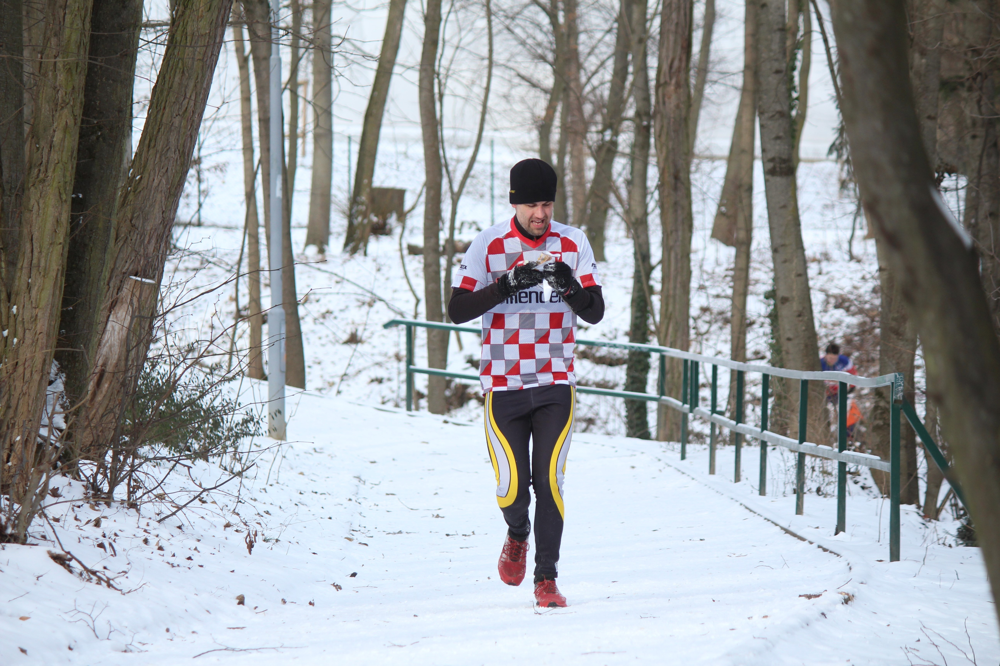
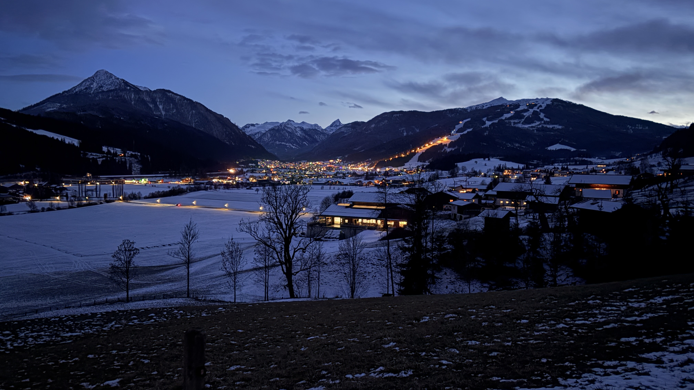
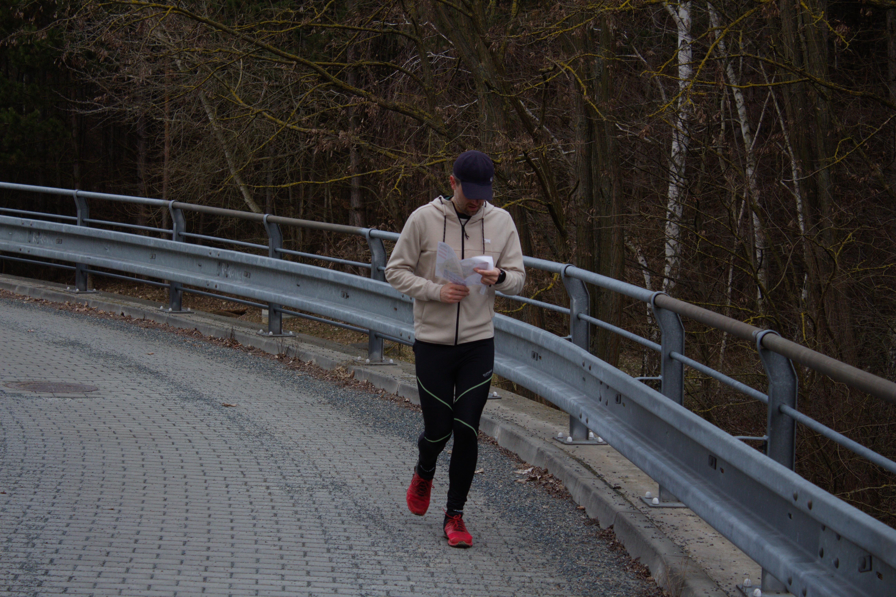
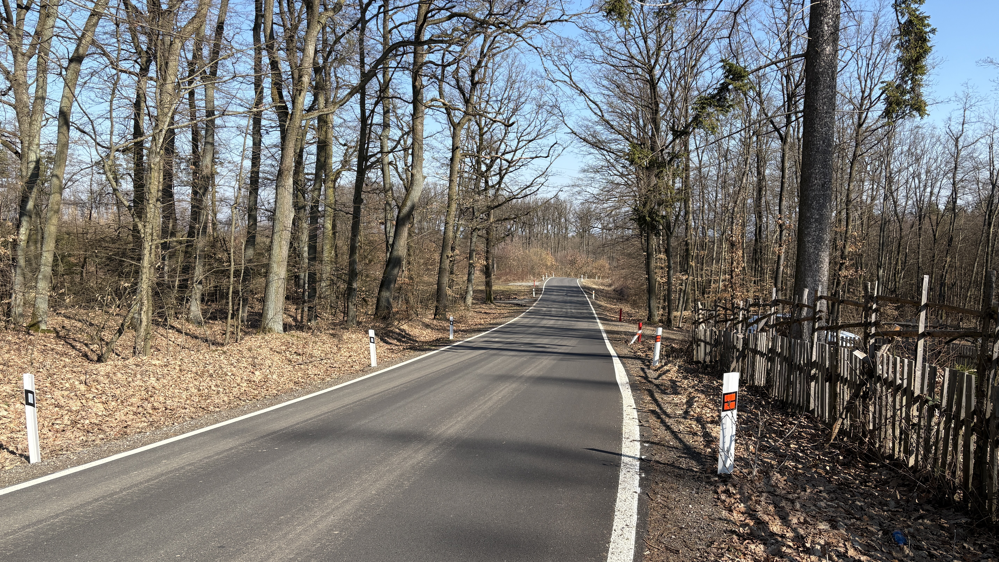
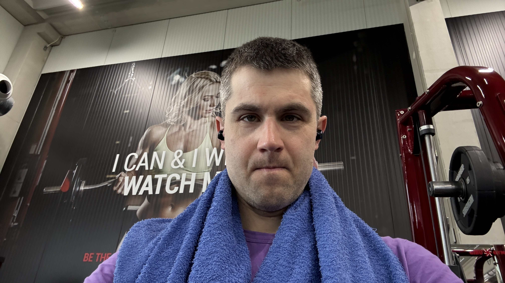
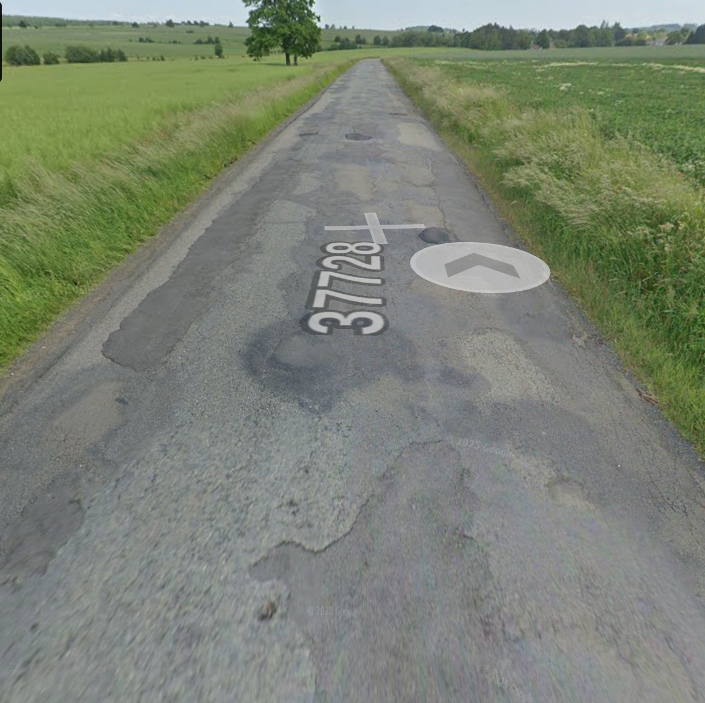
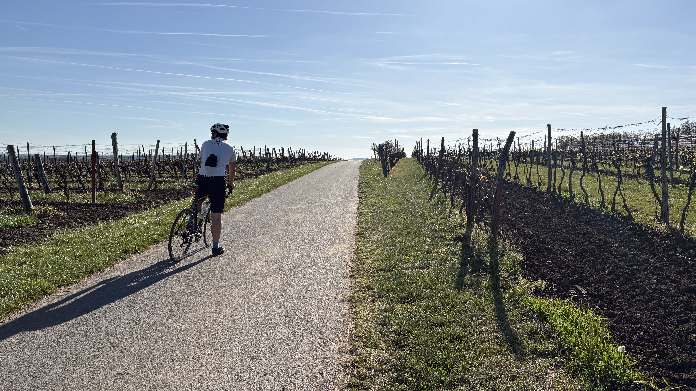

The Ironman Thun '26 Journey
(last update January 2026)
Intro
Bit the bullet on Ironman registration, finally. Want to see if I’ve got the long stuff in me.
I want to chronicle the journey, wherever I take it. Fundamentally, I want to do this my way, that is:
- do it for the sport, avoid all the fads and bullshit
- do it without a coach. I am open to advice from friends, I just don’t want to have to deal with yet another person (or, worse, an ex-pro/false guru) regularly.
- listen to my body and stop if things (aches, being tired) are tipping towards getting out of hand
I am a hardcore hobbyist, so no products I mention are sponsored. My tendency is to be unhappy with any product I get, so it wouldn’t make sense anyway. Read on, you’ll see.
Guiding Principle
Maximize the chance of getting to the start line in Thun on July 5th in one piece.
It is better to show up undertrained than injured.
Said the great man who coached me as a junior orienteerer, I’ve lived by that ever since, and when I strayed I regretted.
Consequently, there is no hard performance goal, crossing the finish line would be huge. Soft performance goal maybe: getting it all over with in 11.5 hours total.
I’ve split the preparation into two epochs: winter epoch, where I try to gain a bit of weight in the gym while maintaining bike FTP, swim once a week and regularly check 5k running best effort. This is to make sure that I start the second and main epoch fit, with a buffer of weight to shed and not hopelessly slow in either discipline.
Nov 17, Week 1 of the winter epoch
Started GZCLP in the gym. Goal is to go from 66.5 kg to 70 kg before March. Putting my numbers in an app. Am I too old to be that nerdy in the gym? The app is pretty good. GZCLP looks like the state-of-the-art bro science too.
Shout out GIBU GYM Brno. Best we’ve got. The motivationals on the wall are something to behold.
Dec 9, Mid-Week 4 winter epoch
Turbo test on the bike, all wattages are down. Kinda expected. Can hold 20 minutes for 229W now. Weight stagnant. Left foot slight pain when running, I hope it’s not the metatarsus.
Using all the Black Friday deals to get the remaining cycling material sorted. Got the basic Keo Blades. They arrived with only the 8 Nm retention blades. But normally people need 12 Nm, that’s another €30.
Destroyed my 15 year old MTB shoes two weeks ago. Getting new ones too. My usual Northwave sizing was off, sent them back, getting Specialized again. It’s like 30% cheaper to get two pairs (for sizing assessment) sent from Germany with no discount than getting them from the local shop with regular customer discount. Much bullshit with anything Specialized, fingers crossed the sizing hasn’t changed in those 15 years and they’ll work out. I don’t expect to MTB much after March so need to start enjoying it ASAP.
Dec 14, Week 4 of the winter epoch, summary
Swimming fitness test, 3 km in 58:10 in a 25m pool. Happy. Little motivation to sink much more time into swimming. Gained some weight to 68.4 kg, which is welcome. Woke up with a head cold Sunday morning which will impact next week. This is expected for me during and around Christmas, it’s that slightly-above-zero temperatures (and maybe not sleeping enough past week).
The bike I got to do this is my first Thru-axle. Means lots of the gear I’ve got I need to replace. Starting with Thule roof rack adaptors (not stocked since September, about €60 per bike). We needed a new system to attach wheels to frames like we need teeth in our asses. Other than that, I can recommend the Thule FastRide. I now drove more then 4k km with bikes on this roof rack. Never a problem, I just have to look out so I do not to end up like this guy.

Dec 17, Week #5 of the winter epoch, mid-week rant
Finally found solid two hours to spend toying with the new bike. Both di2 shifting and 4iiii power meter need a phone app to check the battery status. They ask one to create an account too, with 4iiii it cannot be skipped. Their B-player tech consultants advised them poorly when they promised that harvesting bunch of useless user data will bump the stock/acquisition price.
And the app to check the di2 is not called ‘Shimano Di2’. Believe it or not, it’s called E-Tube Project Cyclist. The user experience it offers is on par with the naming. Everything that happened in road cycling after ~ 2005 is bullshit and Di2 is its current pinnacle.
Good news is that the Di2 battery charges (which I hear is far from guaranteed).
Dec 20
Plagued with a head cold first half of the week. All sorts of small aches, I blame the gym. Also, solid quality sleep, but not quantity, something to improve on, and soon.
Saturday 5 km time trial run, 19:45. Very pleased given everything. Fast course, the Hyperions are fast as well. Could be drier, could have been fitter.

A friend says my run is spastic. He’s not wrong.
Bored on the turbo, so did my first over-unders in 3 years. It is not boring, I give them that.
Dec 28, Week #6 of the winter epoch, summary
Not doing that well in the pool and in the gym, suffering from some muscular back aches. Heard on a (targeted!?) YouTube ad that gym wrecks you after 40, so there’s that.
Ground finally froze this week, which enabled two glorious MTB sessions on the trails.

6 hours of endurance training this week, most from the winter epoch so far, and no need to go higher than that during January.
Dec 29, injured elbow
Five minutes into the second 800m swimming interval this morning my elbow started to hurt on the outside, and so I bailed. It’s the dumbbell rows yesterday, I swear.
This is another deal I’ve made with myself a long time ago: bail quickly if something hurts the wrong way. The injury has already happened and pushing through will only make the recovery longer and the problem peskier.
Knowing when to call it a session is the hardest part in triathlon. It’s worse than the worst intervals or FTP tests. An FTP test feels good when it’s over. But I feel shit all day for pulling out of a session soon because of an injury. Like I’m slacking plus not sure when I’ll be in the pool again.
Jan 4, Week #7 of the winter epoch, summary
Amazing mountain biking with a friend in the snow on New Year’s. Great for testing where my technical limits are, and they are low. For starters, and this is an oldie&goldie, I should stop touching the brakes unless moving in a straight line.
One solid over-unders turbo session. Easy snowy run with another friend. Missed a planned 5k run test due to family obligations (also there’s snow and ice near damn everywhere). But it’s all gravy, because the main lift is still way out.

Jan 11, winter epoch week #8 summary
8th week and I’m finally lifting something substantial in the gym. Alas, pulled a muscle on my neck / upper back during overhead presses. Not stressing, happened before to me in the gym.
Earlier in the week, did a 20 min bike test. Managed 235 W, highest turbo 20 min reading in the past 12 months. Mind you, I don’t touch the turbo during summer. Fairly happy.
A bit of an family urban orienteering on Sunday, on the snowy and icy ground there’s everywhere in Brno now. Took it fairly easy after a turbo session in the morning, yet still ended up with a sore hamstring afterwards, and not the good kind. Not too worried, there’s a chronic problem with my right hamstring, and it typically heals in about 5 days. Taken together with the upper back niggle, time to take it easy during the week #9.

Jan 18, winter epoch week #9 summary
An unplanned recovery week, we decided to go skiing for the weekend. Some recce in Jeseníky for a potential bike/running training camp during spring. Pavement everywhere is so icy that running outdoors is quite limited, a 10k race I was considering got cancelled.
Jan 25, winter epoch week #10 summary
10 weeks into the programme. My fitness remains pretty much the same as at the beginning, expected. Gained 2 kgs over my baseline 67 kgs, which is welcome. Now not to overdo it.
Managed to go through a couple of gym sessions without any back / neck / arm pains. At the same time I’ve been on a zero-caffeine regime last two weeks. Coincidence? I think not. But how should that help? There’s a long-standing love-hate relationship between me and coffee and, essentially, I suspect I tolerate coffee less well than most. Having a cup every other day last couple of months, as I did, the reduced sleep quality piled up, bringing on the aches. Just a hypothesis, of course.
On Thursday I hit my best 20 min power on the turbo since 2023: 239 W. I haven’t ridden much since December, focus is on the gym, so this is a welcome encouragement. Might be my legs just got used to the turbo. I’m not a fan of turbo, in general, and specifically not of the Elite Volare from around 2015 that I’ve got. Watts are hard to get by on that. Plus the boredom. For me the trick to make it bearable is watching legendary concerts on YouTube like Bee Gees’ One Night Only and Blur’s Glasto headline in 2009.
On Friday black ice came down on everything, roads and pavements. Went out for a run anyway. Irresponsible, but unfortunately awesome.
Feb 2, winter epoch week #11 summary
Used a dry weather to do a home-made 5k around the neighborhood. At 22:10 it’s nothing to brag about. However the idea of those tests is more to supplement intensity during the winter block.
Three times in the gym, deadlifting at 80% body weight now (started at 61% in November).
Feb 9, winter epoch week #11 summary
Finally dry enough and warm enough for an outdoor ride. Started slowly on my standard 65 km route through Rudice. They’ve been resurfacing the road there since May, and still at it. Nonetheless, glad to remind myself that the bicycle is still fun, as long as it’s not indoors.
Forest sprint orienteering on Sunday, average HR didn’t surpassed 150, a data point which confirmed my in-race hypothesis that my o-technique is so poor, and my ankles so beaten at this point, and my risk aversion to further damage them so high, that I simply cannot run quite fast. Still: slow orienteering beats no orienteering, any day.
Feb 15, winter epoch week #12 summary
Disappointed that my gym weights haven’t really gone up since December. 2-3 times a week should be enough by most accounts. But I’m afraid I don’t sleep enough. Making sleep quantity a priority metric to improve in the main block.
21:51 for a 5k mid-week test.
First ride on the road this year.
Transport to Flachau for a family skiing holiday on Saturday, and a quick run in the hills (there was no snow in the valley).
Feb 22, winter epoch week #13 summary
Downhill skiing four days, some wellness, some swimming. Snowed every night, and then some during the days, but the slopes were in a poor state thanks to the sheer number of skiers (spring breaks the same week across the EU, clever no?). Also, in Flachau they only groom the pistes once in the evening so if it snows midnight to six am you might as well save yourself €80 for the ski pass and take the day off.
Managed to put in three short runs around Flachau. Aimed to do a longer one too but every time I stepped out to run the sun was setting and I was nervous about getting caught out in the icy darkness somewhere in the woods. Beautiful area though, I should come back in the summer. Running up the big hills makes me feel small, which is the correct perspective.

March 1, Winter epoch debrief
In numbers:
- 13 weeks
- 5.3 hours of endurance training per week on average
- 2.2 gym sessions per week on average
- weight went from 67.0 kg to 70.1 kg
- Lifts: 3 sets of 10x40 kg squats went to 10x50 kg (“3 bullets left in the magazine”). 3 sets of 8x30 kg bench press up to 7x45 kg
- swim: all the 3 km efforts which I timed were around 60 min 20 seconds
- bike: best 20 min turbo effort: 229 W -> 239 W
- run: 19:45 best effort in December (OK conditions); stupidly, I did every 5 km effort on a different course so the results are useless in progression assessment
- Dodgy bike situations: 0 (thank you, boring turbo)
- Nasty falls when running: 1 (patch of black ice near the house after a skiing day)
Anecdotally, I feel slow on the bike, especially climbing, quite possibly because I got heavier. Gaining was planned, not that I get slower. Though the eFTP / kg stayed the same.
Was the gym time worth it? I don’t know. It gave me plenty pains and aches, bordering with minor muscle injuries, especially in December and January. But I did get through the winter without missing a day of training, including 5 full days of (downhill) skiing. That’s the thing with bro science: you cannot retroactively measure if you would have gotten injured less, or more, had you skipped the gym. Certainly, that 2.2 sessions per week added up to a good 40 hours over the winter (admin, prep, commute, changing, shower) and it better had some effects beyond gaining 4 kgs.
Another clear point: at this stage, 1 hour of swimming per week isn’t enough for me to improve. Unable to squeeze a 100 m sprint under 1:42. I would get a coach if I had more time, but also, like, who cares about the swimming split in long distance?
Importantly, I made it through, fit for what’s coming next. Next step is clear: a calculated 18 weeks training block towards a long distance triathlon event in July. Below a picture from Sunday orienteering. Beat all the usual suspects, so my running form at least is not totally hopeless.

March 15, main block week #1 and #2 summary
Roughly 7 hours endurance training each week. Still doing a bit of gym, and probably still overdoing it, had to reschedule the long run this week being gym-sore still after 48 hours.
Dry weather, managed 3+ hour road rides every Saturday the last three weeks. Averaging about 25 km/h, kinda slow, the roads are gritty and I respect the corners. Also cold, so some clothes drag. But honestly, it’s the extra weight I’ve been lugging. The answer is clear: time to stop the gym. Last session next Sunday.
First time ever experimenting with liquid carbs. Kinda excited about it so far: used 75 g mix last Saturday to do the three hour bike ride fasted. Still fresh 2.5 hours in. At least this bit of cycling bro wisdom seems to work.
Getting into longer runs, all good, though depends on what exactly I do, it’s like running pavements tires me quicker than the same volume on trails.

March 21, main block week #3 summary
~ 8 hours, one last gym.
First time in about 20 years on a running track, with my orienteering club. They’ve even hired a coach. Took it easy, about 7/10 effort on the 250 m intervals.
Ticked off a 17.5 km run with two 17.5 min tempo segments. It got fairly grim the last 3 minutes of the second interval, so I think the effort was about right for now.
Main news: took the TT bike for a spin, first time this year. Bought and fitted last September, it’s been just sitting home. I think the fitter did a top job (shout out Marcel Dobrocký), but the narrow handling and the deep rims in rainy and windy weather just make everything unstable. The hour-long ride was more draining mentally then physically. The bike is also insanely fast for what I’m used to, to the point I was paddling less to go slower. First time that ever happened to me. Recently, reflecting on my (lack of) bike riding technique, I identified a bike crash as the top risk of not making it to the start line in Thun this year. Something to get a handle on later, along with my swimming technique.
Did the last regular gym session today. A thought and an emotion washed over me: next time I’m back at Gibu I will either have attempted the ironman, or fucked something up.

March 29, main block week #4 summary
The big week of the first cycle of the main block. ~ 9 hours endurance combined. Zero time/lazy to do strength training, this could bite me.
I tried to do the two bike rides during the week over-geared. Surprisingly fun and surprisingly not that painful, as long as I don’t try to push high watts at the same time (then high watts are painful no matter what). The first session on the TT bike, going over 35 kph gets mental in the crosswinds. It’s like I needed a pilot license for the deep section wheels (humblebrag alright, because they are fast)
Big ride Saturday, 3h37m ultimately. Planned 3h20min. My excuses are that the weather was shit (2°, windy, snow flurries) and I went through what probably amounts to the worst bits of roads in Moravian Karst.

Getting (hopefully) last parts of the gear like bottle cages. Trying to sort out my race hydration plan, I was researching how to avoid the €80 Canyon Seat Post bottle adapter. Turns out that the Fizik Transiro Aeris saddle I got has got screw holes for a bespoke hydration adapter called Aeris link. It’s around €15 if you can find it available. I had to ship mine from the UK, with the post-Brexit double VAT and all.
I bought some Maurten gels (which I already tried once during my Northumbrian ‘23 bike leg, and hated, but they are going to be available at the feeding stations in Thun).
(Re)discovered sculling. A fundamental swimming drill a pro-triathlon coach buddy of mine had told me about years ago, back then I mentally dismissed it. It works (to make me swim faster), and, crucially, it’s one drill I can do in the shallow pool while looking after my youngest.
April 5, main block week #5 summary
Recovery week, easy on paper, ended up poorly with a head cold, sore throat, and a near-miss of an ear infection. The effects still linger.
Nonetheless, did a recovery brick on Saturday. Turns out my new TT bike (the one I call “Erika”) is not that much faster than the old TT bike (with a fairly dialled fit, rim brakes, 0.5 kg lighter, but basic alu small-section wheels). I am not able to push out the same power yet either, I think there’s some way to go before the final verdict on this.
The descends are scary on the deep section wheels, particularly in crosswinds when the wheels are starting to pick up some sort of speed wobbles. And it’s not much better in a minimal wind. I don’t think it’s dangerous inherently, but I tense up and that is dangerous. Ideally I should be perfectly mindful of the road ahead, traffic around, and guide the bike with gentle inputs. Instead, I’ve been catching myself grabbing brakes mid-corner and smashing the shifter buttons spastically, like a 9-year does a PlayStation controller. This is the key thing to focus on in my cycling sessions this spring.
Slow is smooth, smooth is fast.
My wife says I also look fairly tense when I play StarCraft. Not surprised, that performance is hindered too. Something for a completely different blog post.
Managed to swim a 6:53 400m in 25m pool, which is my personal best. Super pleased. If anything, I blame it on consistency (at least one proper pool session weekly), and drills. Something clicked together for me this week during the “OK sign” freestyle drill when a specific forearm position clearly grabs more water than the others.
April 12, main block week #6 summary
Plagued with snot and coughing and snezezing all week, the headcold only lifted on Friday. Did 5x1km intervals within a long run then, but could not bring my heart rate high enough. I think the Aliexpress replacement HR strap for the H10 might be faulty, although the curve looks nice and continuous.
Big TT ride on Saturday, goal was 4 solid hours on good roads. Fairly low traffic and low wind, all was aligned for a biblical ride. Alas, the bike decided to stop shifting 55 km out. Ride back home was in 50/27, the whole way. The Di2 app says that there are derailleurs and that there’s a battery but it cannot see any switches. I had some ideas about troubleshooting and fixing it myself but ultimately decided the wiser thing is to give it back to Canyon under warranty. Which is likely fine by them, except they threaten me I might need to pack the bike up again and send it back. Which is possibly the worst outcome, requiring even more effort to disassemble, pack, ship, receive, reassemble, get the fit right again, setup all the accessories. And have no TT bike for a couple of weeks.
Witness how Canyon’s business model can only work if their bikes are reliable, but they are not.
April 15, update on the Di2 issues
Canyon responded swiftly, there are partner bike shops all around the place. Roll the bike in, with your Canyon invoice, and servicing is free under warranty.
My dude in particular had his first day at the place, but I gave him my best poker face. He was, just like ChatGPT, confident it was a firmware issue. Turned out to be even more basic: the bowden running the cable from the basebar to the front end junction box was poorly fitted and turning the handlebars was pulling on it, to the point it disconnected the cable inside ultimately. The bike shifts again. Hooray. He also said that the steering needed tightening, might be related to the constant speed wobbles.
The Canyon model works after all (even though, 100% assembly error, i.e. their fault).
April 19, main block week #7 summary
8.5 hours, with an 80/20 intensity split exactly.
Swam 58:18 3 km on Monday. Very pleased, am I going to to break 58 mins on this bitch this training cycle? FWIW the trick is consistency, sculling, OK sign drills, and staying mindful all through the swimming sessions. How did nitwits like Michael Phelps managed to break swimming world records I will never understand, but suspect it’s got to do with their mutant hands and feet.
The rest of the week was a grind. A 2h trail run Tuesday where I felt slow and was slow. At least the woods start to be green again. A capacity interval training on Friday in the sun. I don’t think this type of workout directly plugs into anything I’ll use in Thun, but I find it fun (because I needn’t do it) and it’s the only workout that made sense by the end of the week given I had only 45 minutes for it.
Did a medium brick on Saturday on the newly functioning TT bike, plan was 175 minutes with 30 min tempo in it. I miscalculated how flat the route was and was back home in 161 min, although fairly drained from the tempo effort. I stumbled through the run without much eagerness. Perhaps brick + TT bike + tempo work + this length is an order too tall right now, and I should have split this into two workouts.
Huge week next week, then a recovery week.
April 26, main block week #8 summary (volume week)
11h week, bulk of it in a pilgrimiage ride on Sunday down South Moravia to visit a priest friend there. That was the highlight.
The early week was much less idyllic. Speedowork with the orienteering club on Tuesday. Nice session, all-body engagement, tempo, sprints. Except when I was driving home, a nasty elbow pain made itself known. This was from some pushups we did on the track, following Monday 5x100m in the pool. This is what I’m talking about: long amateur endurance events benefit little from hardcore speedowrk. You get some (sort of) fun, but also risk an injury.
A standard climbing time trial on Wednesday, managed to push 263 watts for 21 minutes. This is my all time power output record for 20 minutes. Strangely, time was not a PR. Perhaps it’s the extra weight, or the wind on the day.
Subjectively I feel not great, edgy, restless, borderline angry. It’s particularly bad after shorter bike intensity workouts, like the one on Wednesday. I can tell I’m seeping cortisol. This has happened in the last big weeks in 2023 when preparing for Northumbrian half, and in 2025 preparing for the Czech Grizzlyman half. Except now the event is more than two months out. Family complains too. Not sustainable, I don’t think. Lifestyle changes incoming. Anyone reading this thinking about their own first Ironman: ignore everything “pros” tell you, do your Zone 2, sleep well and eat healthy. “Pros” are unemployed, when they don’t train they either sleep or do fuck all anyway.
OTOH, I have dodged major injuries so far, did some epic rides. Despite the recent axiety, happy camper overall. And weight down to 68 kg now, nearly race weight.
